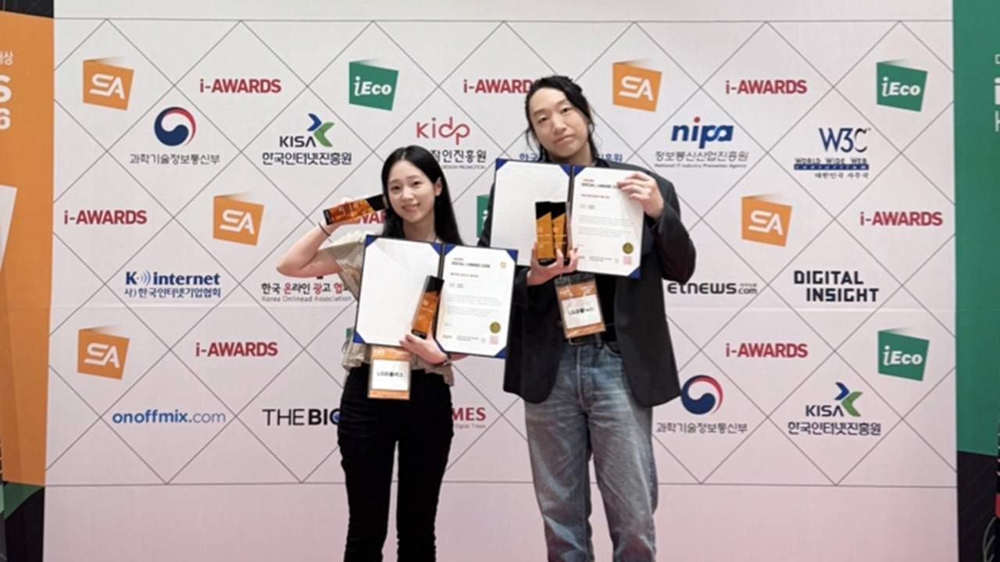
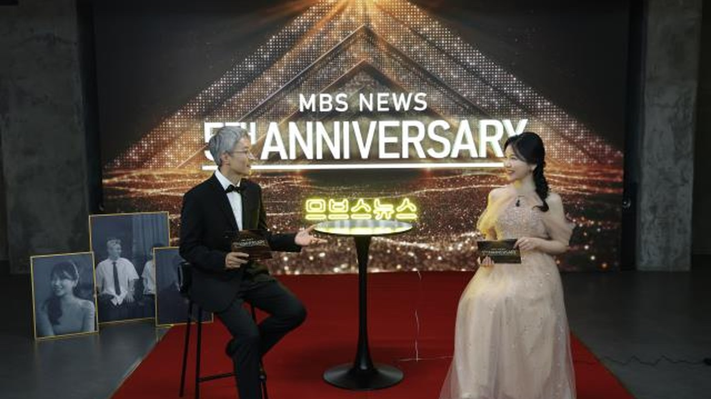
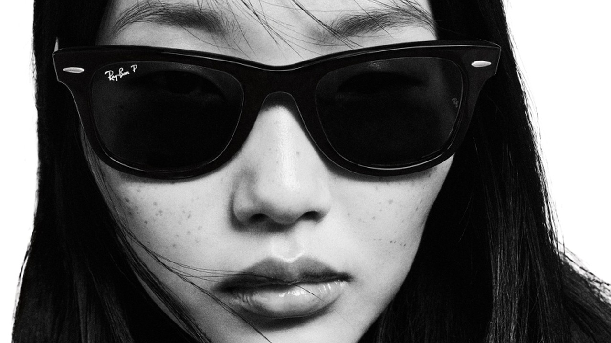
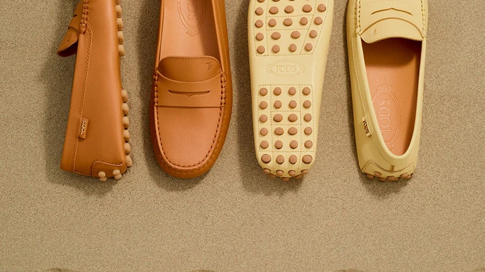
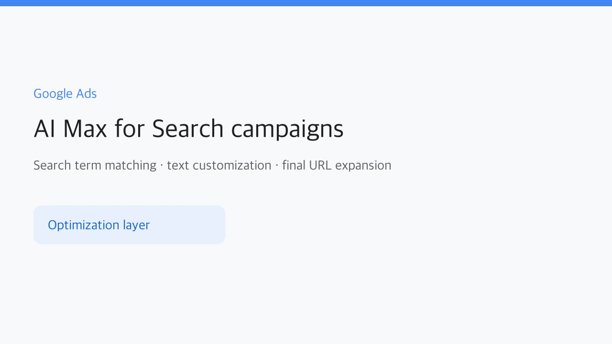
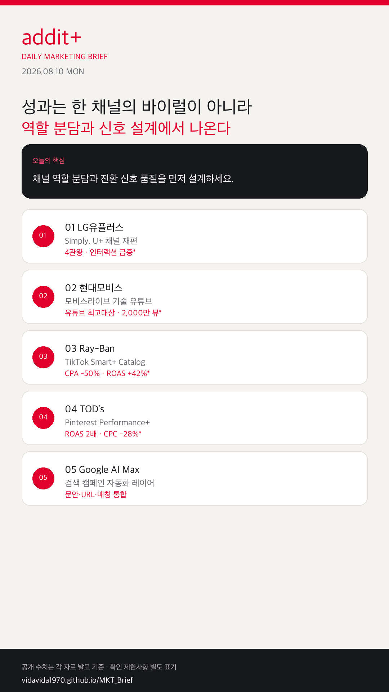

01
AI 광고 자동화가 기본 운영 레이어가 된다
검색어 매칭, 텍스트 맞춤화, 최종 URL 확장이 한 세트로 묶입니다.
국내 브랜드는 채널별 역할을 나누고, 기술 콘텐츠는 설명자를 세우며, 글로벌 퍼포먼스는 자동화보다 전환 신호 품질을 먼저 정비하는 쪽으로 이동하고 있습니다.
검색어 매칭, 텍스트 맞춤화, 최종 URL 확장이 한 세트로 묶입니다.
예산 자동화보다 Pixel, Events API, Advanced Matching이 먼저입니다.
Instagram·LinkedIn·TikTok·뉴스룸을 같은 콘텐츠로 돌리지 않습니다.
임직원·전문가 화법이 검색 유입과 신뢰 형성을 함께 만듭니다.
피드 연동과 전환 추적이 갖춰져야 Performance+가 작동합니다.

KOREAInstagram은 매거진·참여형, LinkedIn은 AI·기술 리더십, TikTok은 숏폼·크리에이터, 뉴스룸은 스토리·기술 허브로 재편했습니다. Instagram 인터랙션 +528%, LinkedIn +331%, 뉴스룸 방문 +513%가 보도됐습니다.

KOREA어려운 모빌리티 기술을 임직원·전문가 대화로 풀고 채용·해외 법인 소식까지 연결했습니다. 소셜아이어워드 2026 유튜브 최고대상, 대표 콘텐츠 2,000만 뷰가 보도됐습니다.

GLOBALSmart+ Catalog Ads에 Pixel, Events API, Advanced Matching을 결합해 AI가 고성과 광고와 잠재 고객을 빠르게 찾도록 했습니다. CPA -50%, 전환율 +47%, ROAS +42%가 공개됐습니다.

GLOBAL연령·관심사 타기팅 대신 Performance+ 최적화와 Shopping Ads, CAPI를 결합했습니다. 다른 소셜 대비 CPC 28% 낮음, ROAS 2배, CPA 19% 낮음이 공개됐습니다.

PLATFORM검색어 매칭, 텍스트 맞춤화, 최종 URL 확장을 묶어 운영하는 AI 레이어입니다. 도구 도입보다 랜딩 정보 구조와 소재 다양성이 전제입니다.
신규 고객 획득과 1-Click Shopping이 쇼핑 자동화 흐름에 추가됐습니다.
Pinterest 업데이트 →채널 포트폴리오와 기술 설명형 콘텐츠가 국내 우수 사례 평가 축으로 확인됩니다.
수상작 발표 보기 →
자동화 도구 이름보다 먼저 필요한 것은 채널 역할표, 설명자 포맷, 전환 이벤트·카탈로그·CAPI 체크리스트입니다.
{kind=link}